目录
Web调度台推荐运行环境在Windows 10 64位、Windows 7 SP2 64位环境上稳定运行。
推荐CPU：Intel(R) Core(TM) i5-9400 CPU 及以上
推荐GPU：Intel(R) UHD Graphics 630及以上，NVIDIA-GeForce系列
推荐浏览器：Microsoft Edge、Google Chrome浏览器
推荐外设：可使用外接摄像头、Mic等外接设备提升调度台音质与摄像头画面质量。
第1章 产品简介
Web调度台软件是针对行业用户推出的专用调度台软件，可视化图形调度界面，使调度用户的状态一目了然；快捷的语音呼叫和视频调度，为用户提供了极高效率的调度操作；调度台和移动应用一体化设计，给用户更加易用、便利的使用体验。
Web调度台可根据不同调度台套餐使用不同定制化功能。
- 标准调度台：标准调度台无定制化功能。
- 智慧养老调度台：根据智慧养老调度台套餐可在WEB调度台中展示出智慧养老数据展示、值班台、档案管理等定制化服务功能。如下图1-1所示。
图 1 智慧养老功能
- AI监管调度台：根据AI监管调度台套餐可在WEB调度台中展示出AI监管、安全审核等定制化服务功能。如下图1-2所示。
图 1-2 AI监管功能
图1-2
1.1 主要特性
- 提供专业品质的用户图形化界面；
- 先进的音视频处理技术，保证高品质的语音和视频质量；
- 实时显示用户状态；
- GIS地图显示集群通终端位置及状态信息，支持轨迹回放；
- 支持AI记录功能；
- 调度操作采用一体化界面，操作便利；
- 多线路共存，利于多样调度操作。
1.2 主要功能
- 语音呼叫、对讲
- 消息、群组消息
- 对讲抢话、对讲切换、对讲组单个/全部禁言、追呼
- 视频监控（最多支持16路）、视频查看
- 视频分发、拍照
- 录制查询、播放、下载
- 对讲记录、文件查询、播放、下载
- 通话记录、文件查询、播放、下载
- GIS数据记录、文件查询、下载
- 上下线记录查询、下载
- 消息记录查询、下载
- 遥毙、激活
- 监控功能
- 能够通过图标颜色和文字指示出用户状态
- GIS功能
- GIS定位、轨迹回放
- 测距、测面积
- 显示组内成员定位
- 定位筛选
- 云广播
- 语音广播
- 文本播
- 文件定时播
- 管理功能
- 用户管理：对用户属性进行管理，实时显示用户状态
- 权限管理：对用户权限进行管理
- 密码修改：当前console登录用户可修改自身密码
第2章 系统登录
2.1 登录
使用浏览器打开链接https://rtc.wisecommey.com:2553/，显示WEB调度台登录界面；
输入登录信息：
- 登录名/密码：即登录该WEB调度台的用户名和密码；
点击【登录】按钮，登录。
图2-1 登录界面
2.2 退出
调度台用户使用鼠标悬浮在界面右上角头像上，可以弹出“账户信息”和“安全退出”选择按钮，点击【安全退出】按钮弹出退出提示，再次点击【退出】按钮即可退出系统。
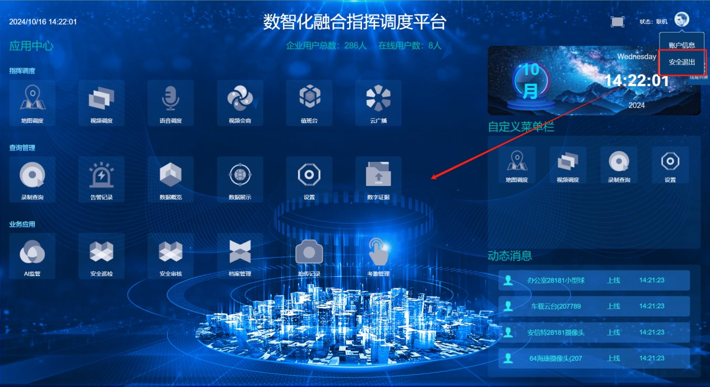
图2-2 退出界面
第3章 调度台界面
调度台主控界面
调度台主控界面显示调度台所有功能及定制化功能，可直观看到设备动态信息与用户在线数量，可对用户进行个性化操作，详细请看下图。
图 3-1 调度台主控界面
系统信息状态展示区
主界面左上角，为当前时间；
图 3-2 调度台系统时间
主界面右上角，为用户显示当前联机状态；
图3-2 调度台系统信息展示
鼠标悬浮在头像上，可以弹出“账户信息”和“安全退出”选择按钮，点击【账户信息】弹框显示用户的企业名称、账户名称及号码。
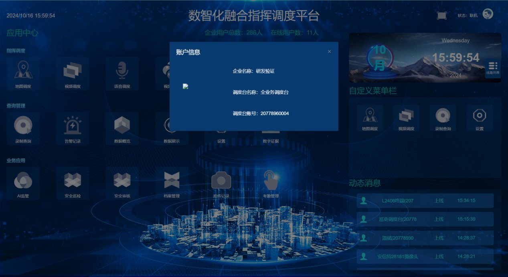
图 3-4 调度台账户信息展示
调度台功能应用中心
用户可在调度台功能应用中心中点击进入对应功能模块进行操作。
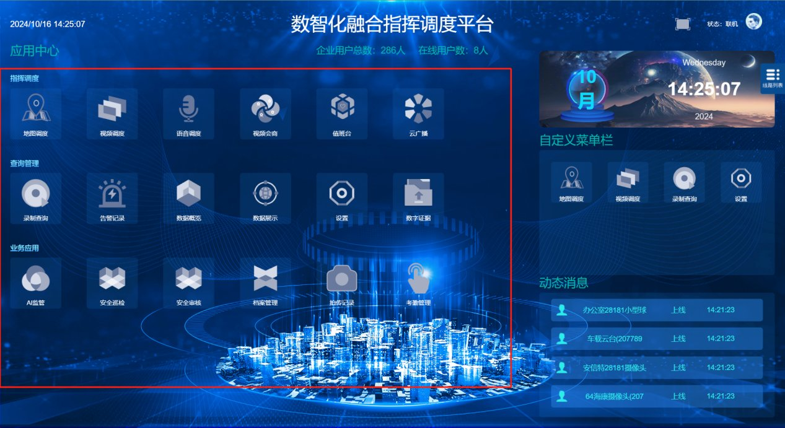
图3-5 调度台功能应用中心
应用中心旁显示企业中所有用户数量与用户在线人数。
图 3-6 企业用户在线状态
时钟
用户可在调度台主控界面时钟模块查看当前时间。
图3-7 时钟
自定义菜单栏
用户可在自定义菜单栏添加常用功能，可在自定义菜单栏中快捷进入目标功能。
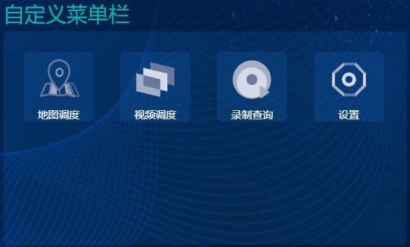
图3-8 自定义菜单栏
添加功能：用户可拖动应用中心功能图标进入自定义菜单栏进行快捷添加。
删除功能：用户可在自定义菜单栏中拖动目标功能放入应用中心即可在自定义菜单栏删除功能。
动态消息
动态消息栏中可显示企业内部终端上下线、告警消息等提醒。
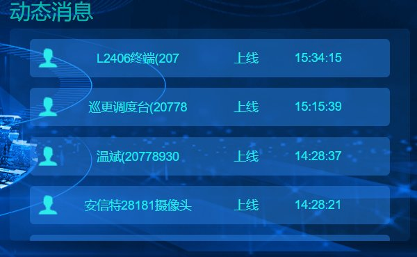
图3-9 动态消息
第4章 应用功能
4.1地图调度
用户点击地图定位功能，界面跳转地图界面，页面左侧显示对讲组、通讯录列表。
4.1.1通讯录
用户点击地图调度功能，界面跳转地图界面，页面左侧显示通讯录列表。
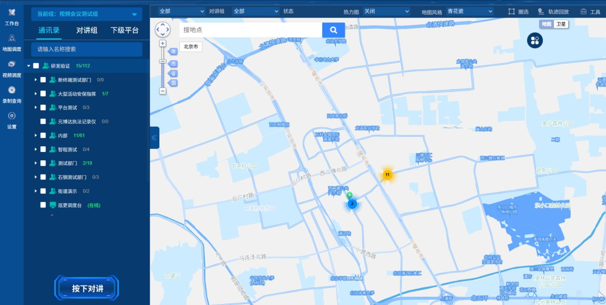
图4-1 地图调度界面
列表显示系统中对讲组用户分布列表以及企业通讯录（调度台用户与监控摄像头在通讯录的最后端展示）。可以根据需要，点击右侧小箭头隐藏/显示通讯录界面。
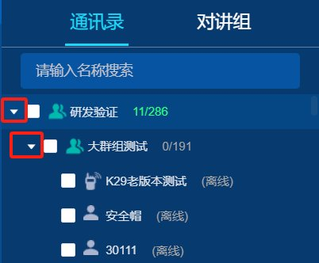
图4-2 通讯录列表展示
4.1.2 对讲组
用户点击地图调度功能，界面跳转地图界面，页面左侧显示通讯录列表，点击对讲组进行切换。
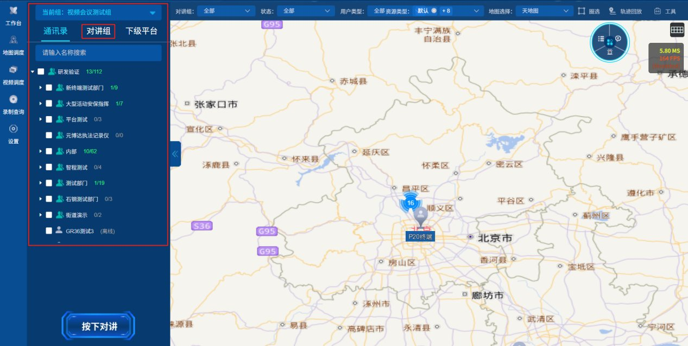
图4-3 对讲组列表展示
对讲组用户列表分为固定组和临时对讲两部分：
- 固定组：该列表显示由管理员在AMP中创建的组；
- 临时对讲：该列表显示临时对讲记录。
鼠标右键单击某一对讲组，弹出功能菜单，可进行快捷操作：
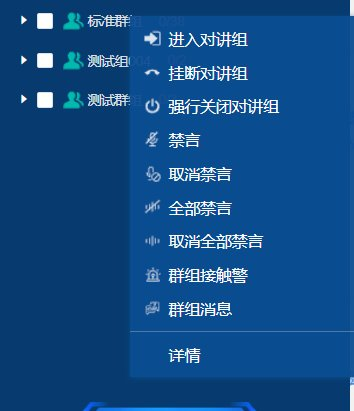
图4-4 调度台对讲组快捷操作
鼠标移动到树形列表中的用户上，右键单击用户（只针对非本调度台终端），弹出功能菜单。对讲组和通讯录的用户列表均可进行快捷操作，且操作相同，功能一致。若终端无某项功能时，功能项置灰不可点。
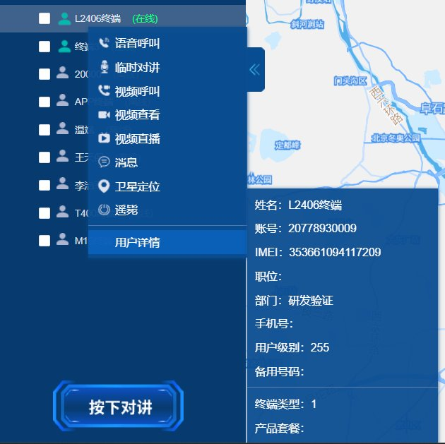
图4-5 调度台对讲组成员快捷操作
- 遥毙/激活：可对终端用户进行激活、遥毙操作（对调度台用户不生效，只针对终端）正常状态下显示为遥毙，用户被遥毙后，显示为激活；遥毙后成员图标变为红色，用户不能发起或接收任何消息及呼叫，此时的用户被强制离线，在遥毙状态下的用户无法登录终端或APP；选择激活后，用户可以登录，进行正常的操作；
- 用户详情：成员右键菜单，滑动到“用户详情”选项，弹出用户详情框，可查看用户姓名、职位、部门、手机号（联系方式）、用户级别、终端类型、产品套餐（支持的功能）等信息。
4.1.3 对讲操作区
进入功能界面左下角是对讲显示区，此区域显示当前正在讲话的用户即话权人，当前登录用户的状态，单击【按下对讲】按钮讲话或释放话权。
若当前有人讲话，可点击【按下对讲】按钮，进入抢话状态，按钮变为【抢话中】，5s后未抢到话权，则自动释放抢话状态，按钮变为【点击对讲】状态。


图4-6 调度台对讲操作区
对讲组切换
在“固定操控区”，单击“当前组”所在行，出现对讲组选择列表，可以自由切换；
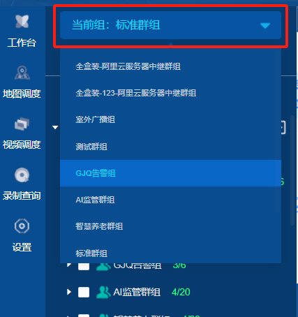
图4-7 切换对讲组界面
在“对讲组&通讯录显示区”，用户使用鼠标右键单击对讲组名称，出现对讲组操作菜单。
- 进入对讲组
点击【进入对讲组】，调度台会加入到该对讲组的会话当中：
如果该对讲组是开启的，调度台切换到该组中，且在里面是听讲的状态；固定操控区的组和状态跟着变化；
如果该对讲组不是开启的，调度台只是切换到该组中，该组成为当前组，用户可以申请话权；固定操控区的组和状态跟着变化。
- 挂断对讲组
点击【挂断对讲组】，调度台用户在对讲组中的会话关闭，组内其他成员可以继续进行对讲。
- 强制关闭对讲组
点击【强制关闭对讲组】，关闭当前对讲组的会话，该组处于关闭状态，组内成员被强行踢出。

图4-8 对讲组操作菜单界面
对讲组禁言
右键单击对讲组名称，除了上述切换对讲组的操作，还可以对单个或全部对讲组进行禁言/取消禁言的操作。
- 禁言/取消禁言：点击【禁言】后，本组被禁言，本来置灰的【取消禁言】切换成可操作状态，点击可以取消禁言设置；
- 全部禁言/取消全部禁言：点击【全部禁言】后，所有对讲组被禁言，本来置灰的【取消全部禁言】切换成可操作状态，点击可以取消全部禁言的设置。
群组消息
使用WEB调度台对多个终端发起群组消息，可进行文件，视频图片，语音录制等群组传输。
鼠标右键目标对讲组后弹出功能复选框，点击群组消息后弹出群组消息框进入后进行编辑即可。
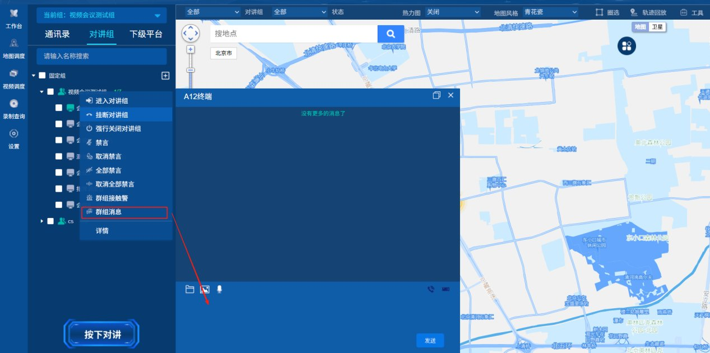
图4- 9 群组消息功能框
4.1.4 语音呼叫
在“对讲组&通讯录显示区”中，滑动鼠标到某用户单击鼠标右键，出现快捷操作功能对话框，点击【语音呼叫】按钮发起语音呼叫；
发起呼叫，且呼叫线路建立后，
调度主界面中：调度台右侧线路列表显示被叫名称/号码、去电状态、挂断，被呼叫方显示来电界面，“来电提醒窗口”显示来电名称/号码、接听、挂断；此时，等待被呼叫方接听即可。
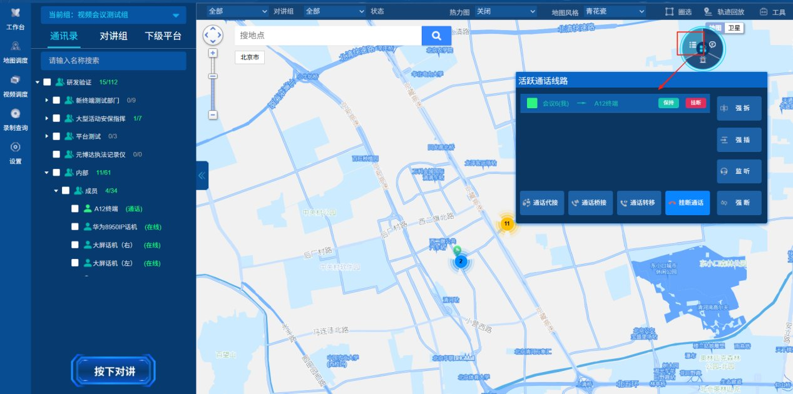
图4-10 语音呼叫去电界面
接听来电
- 空闲状态
当调度台用户空闲时，有来电呼入，调度台线路列表与右下方弹出“来电提醒”提示窗口，此时，调度台用户可选择接听或拒接来电。
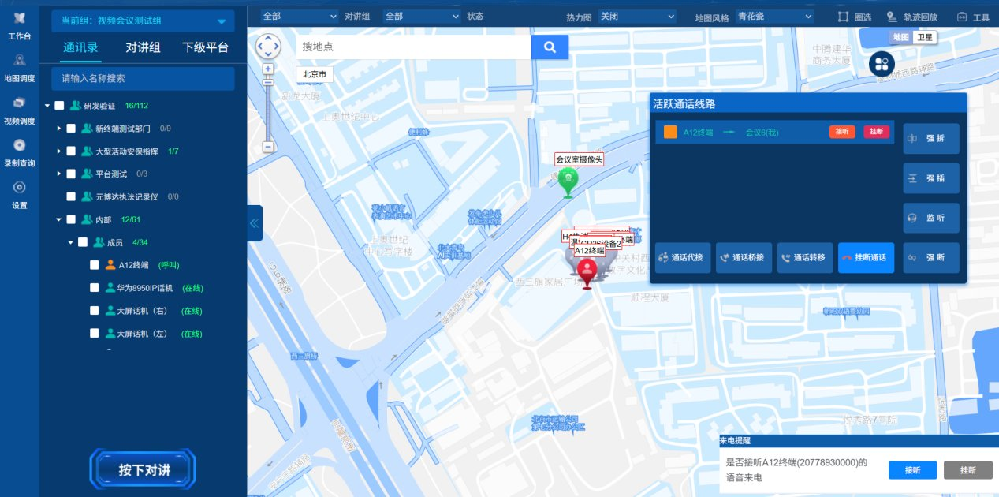
图4-11 来电提醒提示框
- 接听来电：
单击【接听】，即可接听。主界面出现通话窗口，显示对端名称/号码、通话时间以及【挂断】按钮。
- 挂断来电：
直接单击通话窗口下方的【挂断】按钮。
- 非空闲状态
当调度台用户处于非空闲状态时，有来电呼入，调度主界面中弹出提示框。
调度台可保持上一路通话，与新接来电进行语音通话。
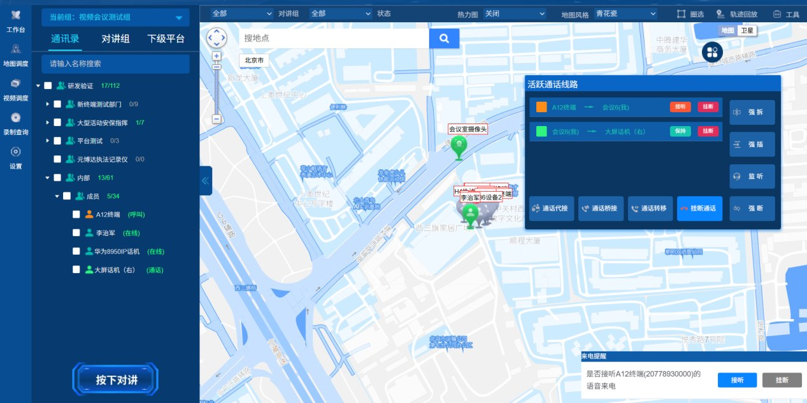
图4-12 非空闲来电提醒提示框
一键告警来电
调度台接收到一键告警的来电后，调度台会响起警报声，并弹出呼入选择窗口。
点击【接听】按钮，即接听来电；
点击【挂断】按钮，即拒接来电。
图4-13 一键告警来电提醒提示框
活跃线路
平台用户可在活跃线路中看到企业中正在进行的语音线路，并进行，监听、强插、强拆、强断等语音调度功能；

图4-14 线路状态
监听：选择目标通话线路后，发起监听操作，即可实时监听该条语音通话线路；监听时，活跃线路中会显示平台正在监听的线路；

图4-15 监听线路状态
强插：调度人员选择目标通话后，发起 “强插” 操作，系统会将其接入当前通话链路，实现三方及以上的实时语音通话；

图4-16 强插线路状态
强拆：调度人员选定需中断的通话后，执行 “强拆” 操作，系统将强制终止该通话的语音连接；
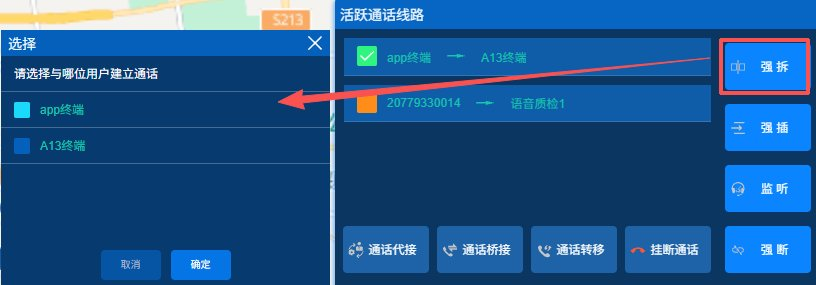
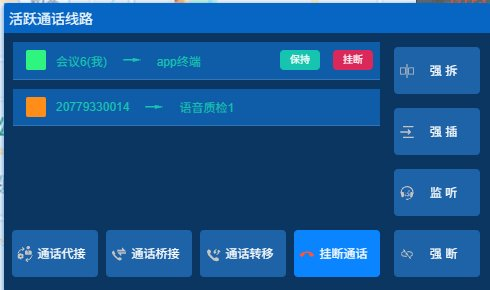
图4-17 强拆线路状态
强断：调度人员选定需中断的通话后，执行 “强拆” 操作，系统将强制终止该通话的语音线路。
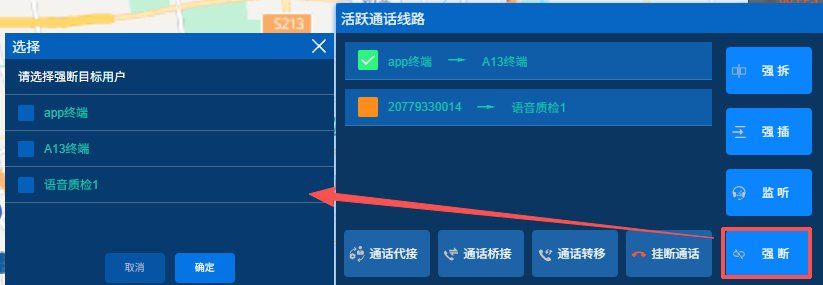
图4-18 强断线路状态
通话代接：平台在活跃线路中查看到用户始终在振铃状态时，可选择通话代接功能，代替用户接听；
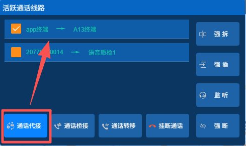
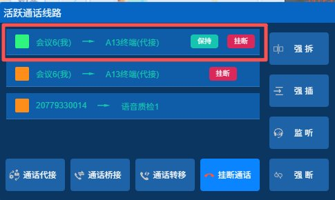
图4-19 通话代接状态
通话转移：平台在活跃线路中选择 通话线路，点击“通话转移” 功能，从用户列表中选定目标用户后，即可完成通话转接，整个过程不中断原有语音。
通话桥接：调度人员选择需桥接的两条通信链路，发起桥接操作后，系统会建立链路之间的语音转发通道，实现跨链路语音交互。
挂断通话
- 拒接来电
当有来电呼入时，调度台用户可直接点击“来电提醒”窗口中的【挂断】按钮，拒接来电。
- 挂断正在进行中的通话
通话正在进行中，调度台用户可直接点击“通话”窗口中的【挂断】按钮，即可挂断通话。
4.1.5 临时对讲
在“对讲组&通讯录显示区”中，勾选成员前面的复选框，在调度台界面弹出选中成员列表，可以在不同对讲组或部门中选择成员，选择完成后点击【临时对讲】可发起临时对讲。
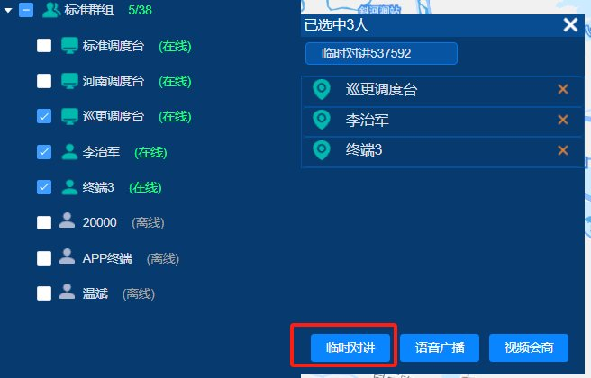
图4-20 发起临时对讲
调度台用户可在复选框上方修改临时对讲组名称，以方便识别对讲组。
发起临时对讲后，出现临时对讲界面；

图4-21 临时对讲界面
- 左上角窗口显示临时对讲名称；
- 左下角显示当前讲话人；
- 点击【点击对讲】按钮，申请话权，抢到话权后可以进行讲话；点击【点击释放话权】按钮，释放话权；
- 点击【结束对讲】按钮，结束本次临时对讲；
- 点击“邀请”按钮，弹出成员列表框，可为临时对讲添加新成员。
4.1.6 语音广播
在“对讲组&通讯录显示区”中，勾选成员前面的复选框，在调度台界面弹出选中成员列表，可以在不同对讲组或部门中选择成员，选择完成后点击【语音广播】可发起语音广播。
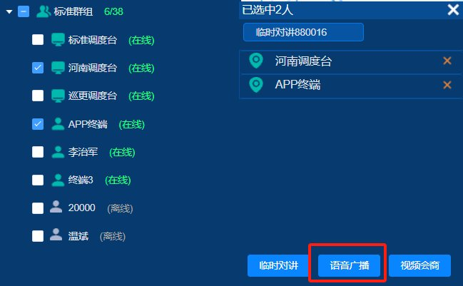
图4-22 发起语音广播
发起语音广播后，出现语音广播弹窗；

图4-23 语音广播界面
发起语音广播后调度台弹出语音广播弹窗，弹窗内显示已邀请成员。
成员未进入广播时成员状态显示振铃；
成员进入广播后成员状态显示通话；
成员进入广播后，调度台直接发起讲话即可；
结束广播时，可点击语音广播弹窗右下角“结束广播”按钮。
4.1.7消息/群组消息
使用WEB调度台对终端或其他调度台之间进行消息文本、图片、视频，文件等进行单对单的传输。
也可使用语音录制、语音通话、视频通话进行联系沟通。
鼠标右键目标终端后弹出功能复选框，点击消息进行编辑即可。
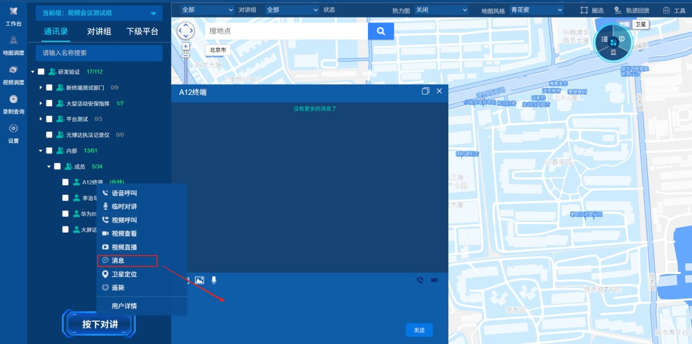
图4-24 消息功能框
调度台如消息功能框已关闭，并且收到其他终端消息时调度台地图右侧出现提醒，并且伴有提示音提醒，点击消息列表后即可查看新消息和历史消息。
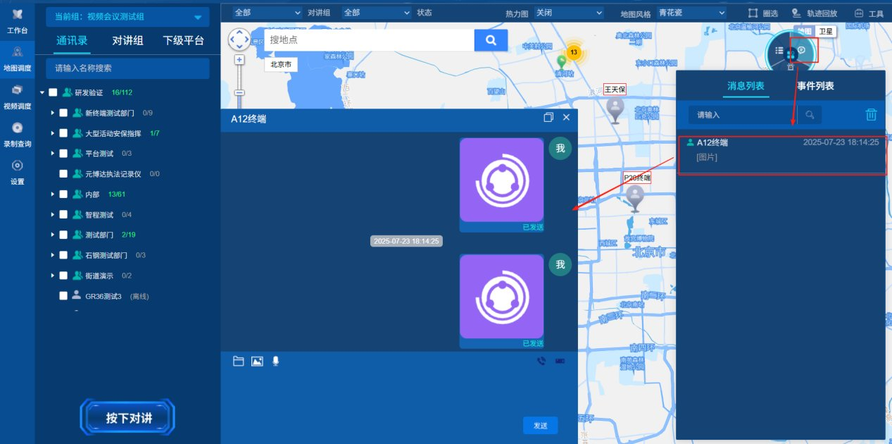
图4-25 新消息历史消息提醒
4.1.8地图功能
地图以图形化方式，可显示终端位置及状态信息。
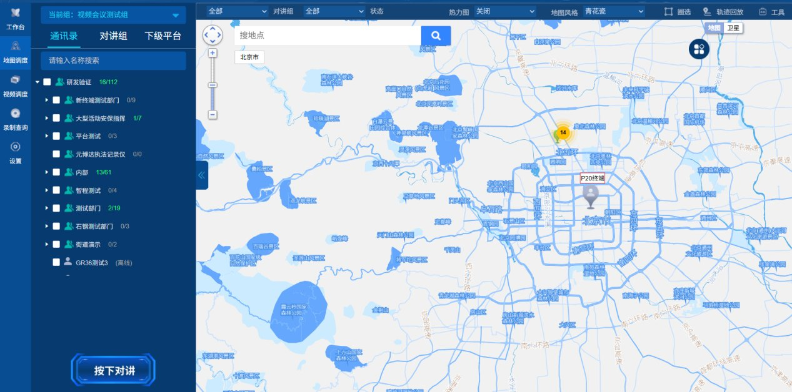
图4-26 调度台GIS地图定位
在GIS地图中，具有平移、放大/缩小、搜索、语音呼叫、视频呼叫、轨迹回放、工具（测距、侧面积）、地图风格等功能。
平移
在GIS地图监控区域，可以通过鼠标进行平移操作以便查看。
放大/缩小
在GIS地图监控区域上滑动左侧上下滑动条，或者滑动鼠标滚轮，对某区域位置进行放大或缩小的查看。
定位
终端上开启GPS定位后，可以上传数据到服务器，调度台可以通过GIS数据获取接口获取到终端上传的数据，显示在GIS地图界面。
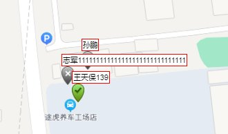
图4-27 GIS界面-地图定位
组内成员定位
在调度台GIS地图上，系统默认显示所有开启GPS定位的终端。调度台用户可以通过GIS地图左上角的对讲组下拉菜单，选择某一个对讲组，实现地图上只显示该对讲组的全部成员位置信息。同时，用户只能对该组成员进行轨迹回放，在搜索框中只能搜索到该组成员。
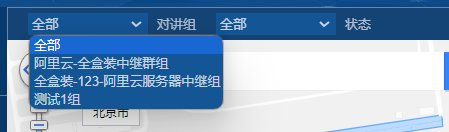
图4-28 GIS界面-组内成员定位
定位筛选
调度台用户可以通过GIS地图上方的状态下拉菜单，进行地图定位点的筛选，默认显示全部定位点，包括在线和离线的成员，可更改为在线状态，则地图中的定位点仅显示在线成员的定位点。
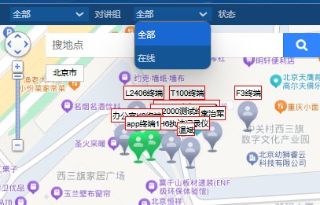
图4-29 GIS界面-定位筛选
用户信息
在GIS地图上，用鼠标左键点击一下用户的图标，可查看用户的详细信息和可调度的功能按键（语音呼叫、视频呼叫、轨迹回放）。
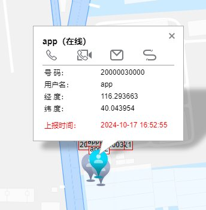
图4-30 GIS界面-用户信息
语音呼叫
在GIS地图上点击某个用户图标，显示用户信息框中，出现调度功能按键，点击【语音呼叫】即对此用户发起语音呼叫。
视频随动
在GIS地图上点击某个用户图标，显示用户信息框中，出现调度功能按键，点击【视频呼叫】即对此用户发起视频随动，地图界面弹出视频窗口，接通后显示视频画面。该画面跟随终端定位点移动发生改变。
轨迹回放
点击GIS地图右上方的【轨迹回放】可以选择终端、开始时间、结束时间，点击【查询轨迹数据】，调度台将在地图上绘制出终端的整个运行轨迹。当系统检测到两个上报点之间的时间间隔超过了5分钟，轨迹中用虚线表示，否则是实线。
选择回放的开始和结束时间时，其间隔时段必须在3天（72小时）以内。
终端列表显示的用户是上报过GIS信息的终端，回放时间按照秒为单位计算。
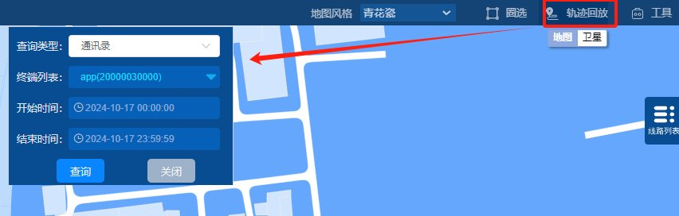
图4-31 GIS界面-轨迹回放
工具
调度台用户可以在GIS地图上应用的工具，包括测距、测面积。点击GIS地图右上角【工具】，在显示下拉菜单中选择。
- 测距：点击测距按钮，鼠标变成测距图标，单击开始，双击结束，自动显示距离（包括分段长度和总长）。点击结束点旁显示关闭按钮可清除测距线条。
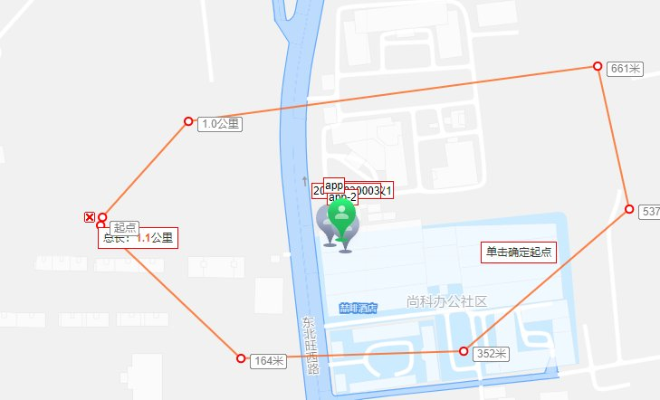
图4-32 GIS界面-测距
- 测面积：点击测面积按钮，鼠标变成测面积图标，面积绘制完成后，显示此次测绘的面积数据；面积区域显示为灰色，起点旁显示关闭按钮，点击关闭按钮可清除绘制的面积区域。
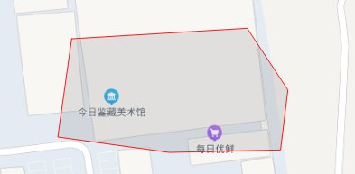
图4-33 GIS界面-测面积
4.2 视频调度
用户点击视频功能，界面跳转视频窗口界面，页面左侧显示对讲组、通讯录列表。
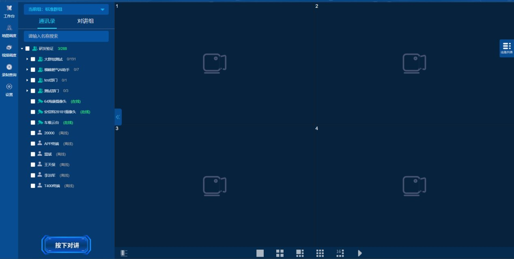
图4-34 视频功能界面
默认显示4屏视频界面，在非视频界面可接听或发起视频相关操作，发起视频后，自动跳转到视频界面。
- 支持1、4、6、9、16常用分屏数，视频窗口可切换至下一页/上一页，可以用鼠标拖拽来切换视频窗口；其中，6屏为大小屏显示；
- 接收的视频按窗口从左往右、从上往下显示，若视频数超过目前页面最大视频数，则跳转到下一页；
例如，目前显示的是4屏界面，接收第5路视频后，自动跳转到第二页，显示第5路视频；若关闭5路中的某一路视频，后面的视频不向上补齐，再来一路新视频的话按顺序填补之前的空缺视频窗口。
- 双击单个视频界面，可最大化视频窗口，再双击恢复；
视频调度：可同时支持最多16路的视频通话/查看/上传，语音只能存在1路，即接收到多路视频通话时，仅播放最后一路视频通话的声音，其他路的视频通话自动保持，若将其他路视频通话声音打开，当前视频通话的声音会被自动保持。
发起视频通话/查看
在“对讲组&通讯录显示区”中，滑动鼠标到某用户单击鼠标右键，出现快捷操作功能对话框，点击【视频呼叫/查看】按钮发起视频通话/查看；
- 视频去电界面，去电窗口上显示：被叫名称（号码）、去电状态；鼠标移动到视频界面，悬浮显示挂断按钮；
图4-35 视频去电界面
- 视频通话界面，通话窗口上显示：对端名称（号码）、通话类型；鼠标移动到视频界面，悬浮显示切换、分发、抓拍、挂断按钮；
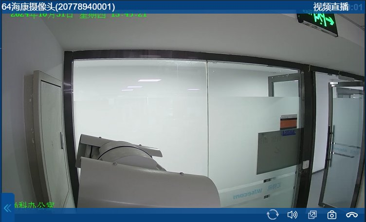
图4-26 视频通话界面
接收视频通话/查看
当调度台用户空闲时，有视频来电呼入，调度主界面中弹出提示窗口伴随振铃音；来电界面显示来电名称、接听、挂断；此时，调度台用户可选择接听或拒接来电。
图4-27 视频呼叫来电提醒提示框
接听呼叫后，出现视频通话窗口：
在窗口标题栏显示对端名称/号码、通话类型；
鼠标移动到视频界面，窗口下方显示切换、分发、抓拍、挂断按钮。
切换
与终端或者APP用户视频通话/查看/上传的过程中，点击视频窗口的【切换】按钮，可以对终端或APP端的视频画面进行前置和后置摄像头的切换。
视频监控
当对端终端用户为GB/28181用户时，调度台用户在“对讲组&通讯录显示区”中，滑动鼠标到某GB用户单击鼠标右键，出现快捷操作功能对话框，点击【视频直播】按钮发起视频查看，该摄像机的视频画面和音频将被回传并显示在调度台的视频监控窗口中。
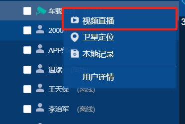
图4-28 GB用户操作菜单界面
云台控制
摄像头视频直播过程中，可全屏目标摄像头进行云台控制，可控制摄像头上下左右方向移动和焦距放大、缩小。如摄像头支持语音对讲，可点击“发起对讲”发送语音。
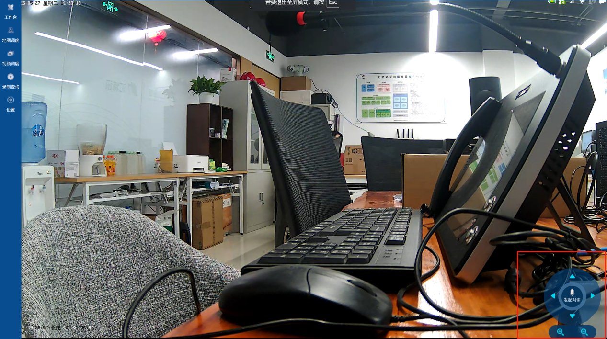
图4-29 云台控制界面
分发
视频通话/查看/上传的过程中，点击视频窗口的【分发】按钮，弹出用户列表弹框，通过勾选选择分发用户，可以将视频内容分发给被选用户查看。
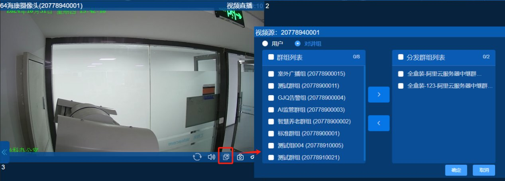
图4-30 视频分发界面
抓拍
视频通话/查看/上传的过程中，点击视频窗口的【抓拍】按钮，实现对视频画面的拍照功能；点击按钮后会自动下载当前图片到本地。
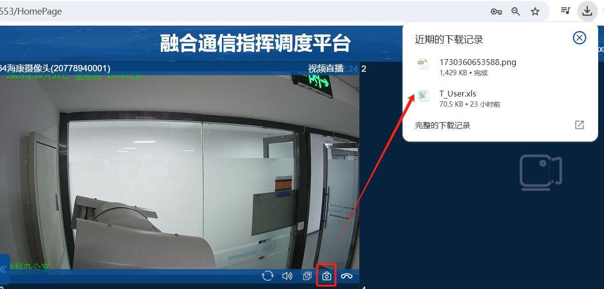
图4-31 抓拍界面
4.3多组监听
用户点击多组监听功能，界面跳转指多组监听界面，界面显示调度台所在的所有对讲组；
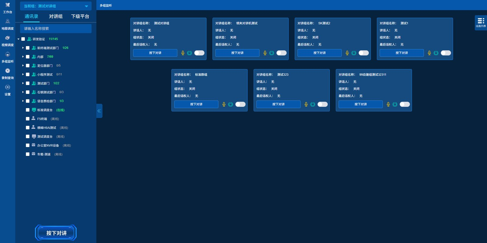
图4-32 多组监听界面
用户可在多组监听功能中对多个群组进行实时对讲监听，调度台可在该界面中快速对对讲组进行讲话、对讲组禁言、关闭对讲组操作。
用户进入多组监听功能后可通过点击目标对讲组右下角“开启”按钮，打开该组监听功能。
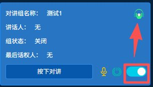
图4-33 开启监听
用户可点击目标对讲组“黄色麦克风”开启对讲组禁言；
禁言后，对讲组中所有成员无法发起对讲；
再次点击可关闭禁言；
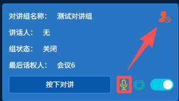
图4-34 开启禁言
组状态空闲时，用户可点击目标对讲组“关闭”按钮，关闭该对讲组空闲状态；
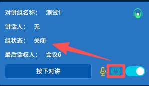
图4-35 关闭对讲组
4.3录制查询
用户点击录制查询功能，界面跳转录制查询界面，页面左侧显示对讲组、通讯录列表，右侧显示录制查询功能列表。
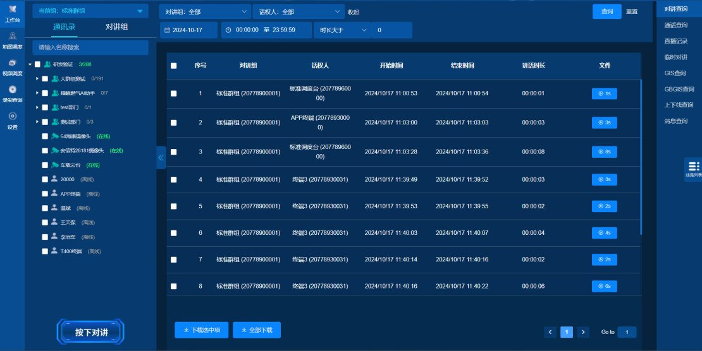
图 4-36 录制查询界面
可以查询对讲记录、通话记录、临时对讲记录、GIS数据、上下线记录、消息记录。
在查询界面上方，调度台用户可通过人员、类型、时间范围等信息进行查询，查询结果也可通过勾选点击【下载选中项】或【全部下载】按钮下载到本地。
4.4告警记录
用户点击告警记录功能，界面跳转告警记录界面，页面左侧显示对讲组、通讯录列表，右侧显示告警记录功能列表。
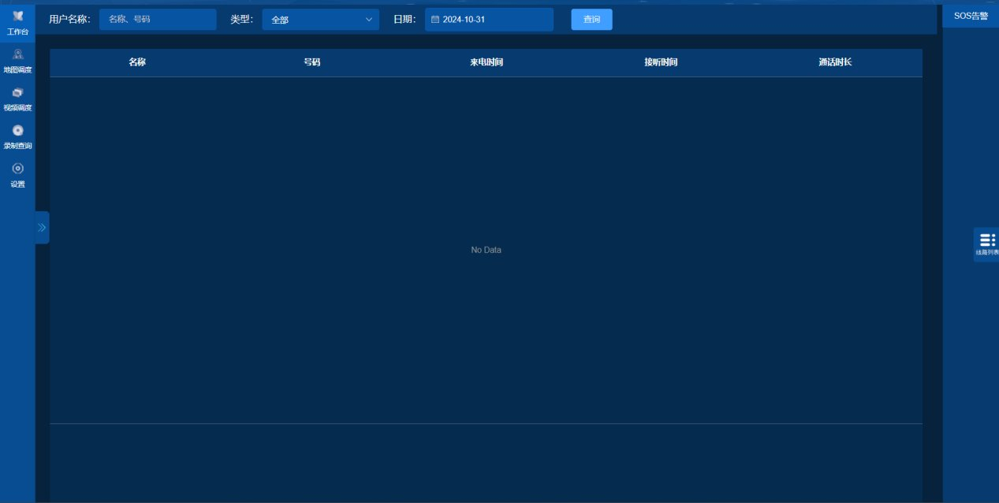
图4-37 告警记录功能界面
告警记录可以查询终端SOS告警信息。
在查询界面上方，调度台用户可通过终端名称、账号、IMEI号码、告警类型、时间范围等信息进行查询。
4.5 云广播
用户点击云广播功能，界面跳转云广播界面。
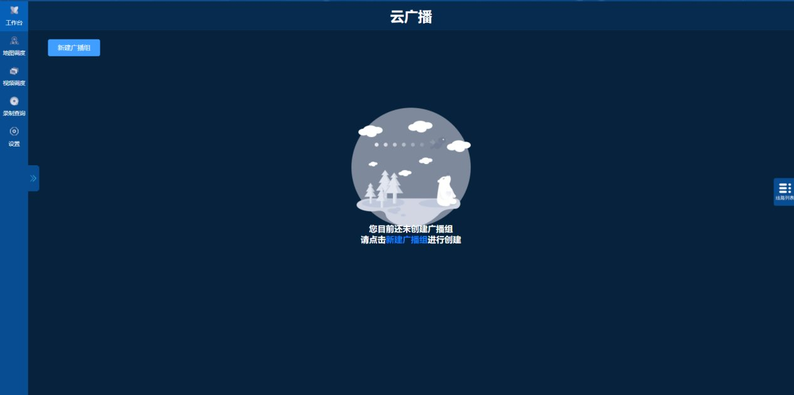
图4-38 云广播功能界面
调度台对群组或目标终端进行实时语音广播、文本播、文件定时广播等多项远程广播。可根据使用环境进行灵活的广播任务。
广播组创建
调度台在左侧功能列表中选择云广播功能，进入后创建广播组。
首先输入广播组名称，完成后在添加成员中点击人员选择。
广播组可选择调度台所在部门成员和目标对讲组，选择完成后点击确定，可在添加成员处看到所选人员，如需调整，可在框内选择成员进行删除，选择完成后点击确认，广播组即创建完毕。
注：所选成员仅能在一个广播组内，成员加入广播组后，新建广播组无法添加此成员。
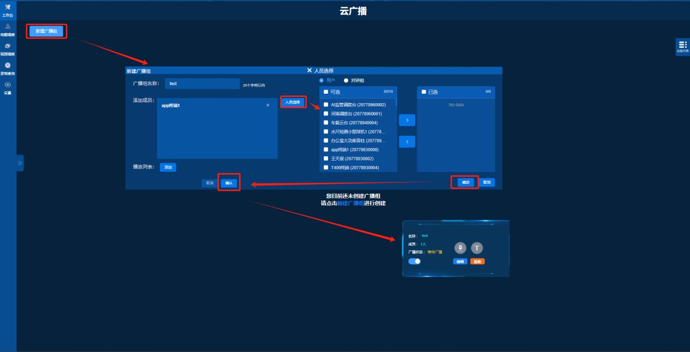
图4-39 广播组创建
语音广播
用户可在所创建云广播组中，对所创建群组进行语音广播找到目标云广播组，点击广播组灰色麦克风即可进行语音广播。
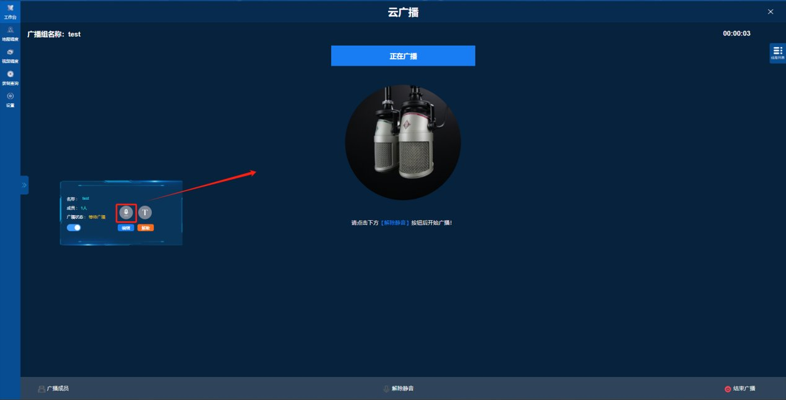
图4-40 云广播语音广播界面
文本播
在调度台云广播功能中找到需要文本播的广播组， 点击“T字符号”弹出文本转语音功能框，在功能框内输入所需文本内容，输入完毕后点击文本框下方“立即合成”合成完毕“发起广播”选项亮起，点击“发起广播” 页面跳转到“正在广播”页面，文本播广播即可正常播放。
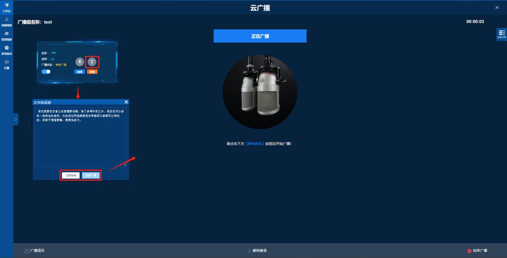
图4-41 文本播操作界面
文件定时播
在调度台云广播功能中找到需要文件定时播的广播组， 点击“编辑”后弹出广播组编辑功能框，点击“播放列表”弹出“编辑规则功能框”可选择播放日期、播放本地文件、播放次数，设置完成后点击确认，“编辑规则”即可设置成功，成功后自动回到广播组编辑功能框，此时新增一条“列表详情”再次点击下方确认，即可保存广播组文件定时播，
- 播放日期为每周一二三四五六日，非一次性使用。
- 播放本地文件可添加三条播放。
- 播放次数可根据实际使用情况进行选择，最多可循环3次。
- 可根据实际使用情况添加多个播放列表。
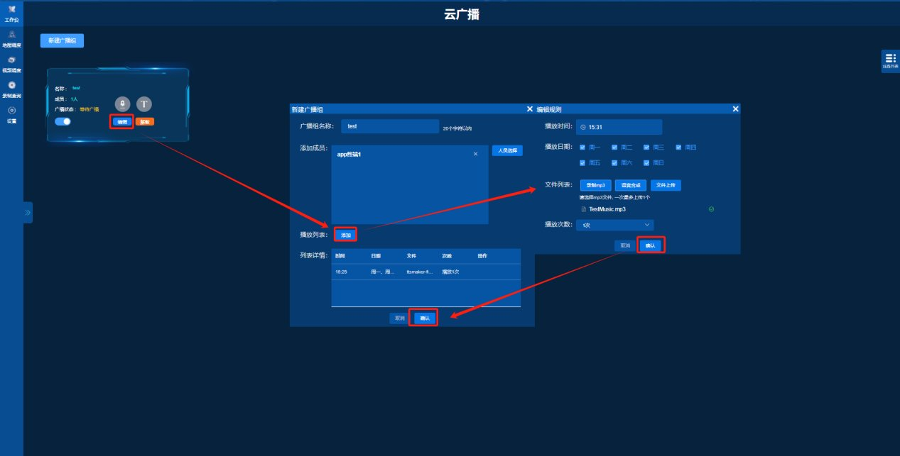
图4-39 文件定时播操作界面
如需结束文件定时播，点击广播组“广播状态”下方开关按钮切换为“关闭”状态即可。
图4-40 关闭广播组
解散广播组
在调度台云广播功能中找到需要解散的广播组，点击“解散”后弹出提示复选框，点击复选框中“是”即解散广播组。
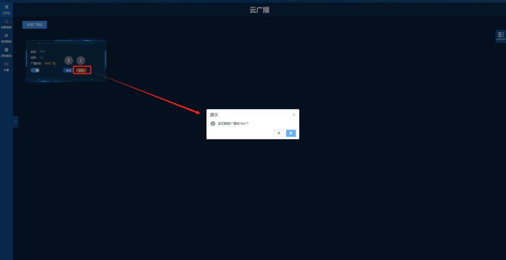
图4-41 解散广播组
4.6设置
用户点击设置功能，界面跳转设置功能页面，页面右侧显示显示系统设置、修改密码。
图4-42 设置页面
系统设置
- 接听设置：终端开启自动接听后，根据当对讲发起的用户等级与当前调度台用户的等级关系，设置系统可自动执行的操作，包括：忽略、接听、提示；
接听设置
- 忽略：不接听对讲来电；
- 接听：自动接听对讲来电，即开启对讲监控；
- 提示：弹出提示框，告知调度台用户有对讲来电，由用户自行决定是否接听。
- 主页LOGO：调度台用户可自定义登录页的logo以及登录后左上角的主页logo。
主页Logo设置
- 主页标题设置：用户可以自定义本系统的标题，默认为空。
主页标题设置
- 无人机视频地址配置：增加无人机视频地址后可进行无人机视频直播。
例：输入网址：https://123.57.50.6后点击保存即可。
无人机视频地址配置
- EMP账号及地址配置：可在设置中填写EMP账号及密码，填写保存后可点击EMP管理平台功能，点击进入EMP后台管理界面。
EMP账号及地址配置
例：输入网址：http://n2.wisecommey.com+账号+密码，点击保存后刷新调度台，即可在工作台界面看到EMP管理平台功能。
- 自定义功能：输入对应功能名称与功能访问连接，点击保存后应用中心自动刷新出新功能及图标，点击即可快捷访问。
自定义功能设置
- 地图设置：可选择GIS地图界面设置为“百度地图”、“百度离线地图”或“Cesium地图”，可以选择目标城市为默认定位点，设置完成后点击保存，刷新网页即可生效。
地图设置
- 联动话机：用户可对已登录调度台设置呼叫联动号码，如其他用户终端对该调度台进行语音呼叫时，会首先呼叫该联动号码。联动终端接听即可创建通话。
联动话机设置
例：点击启动联动号码
选择联动类型
振铃组：如设置多个联动号码，调度台接收呼叫时，会同时呼叫联动列表中已设置的所有终端，与首先接听的号码进行通话。
轮询组：如设置多个联动号码，调度台接收呼叫时，会按列表从上到下顺序进行呼叫，如最上方号码接听呼叫建立通话，则不会再向下进行轮询呼叫。
输入联动“终端”或“话机”账号号码，最大支持填写4路；
输入完成后点击设置保存按钮，刷新调度台即可。
注：系统配置修改保存后，重新刷新浏览器界面即可生效。
修改密码
用户进入设置功能后，点击修改密码，即可进入修改密码界面。
图4-43 修改密码界面
- 修改密码：用户可在此处修改当前登录账户的密码，密码修改成功后需要退出，用新密码重新登录。
录像计划
用户进入设置功能后，点击录像计划，即可进入录像计划界面。
图4-44 录像计划界面
用户可在该界面中对已接入的GB用户设置后台录制，选中目标摄像头后点击保存，调度台提示“录像计划通道修改完成”即可保存成功。
保存成功后，目标摄像头会在后台中每小时录制一个视频周期文件自动上传，用户可在“录制查询”功能-直播记录中查看目标摄像头上传的录制文件。
图4-45 录像计划列表
4.7网络检测
用户点击网络检测功能，界面跳转网络检测功能页面。
图4-46 网络检测界面
调度台用户可在该页面中直观看到用户实时上报的信号强度，电量等信息；
点击目标信息-详情，可查看信号类型（4G/5G），运营商等详细信息。
网络检测-详情
也可勾选目标信息进行批量导出等操作。
调度台用户也可在地图调度中点击目标用户的实时定位点，看到用户实时上报的信息。
图4-47 定位-信号上报